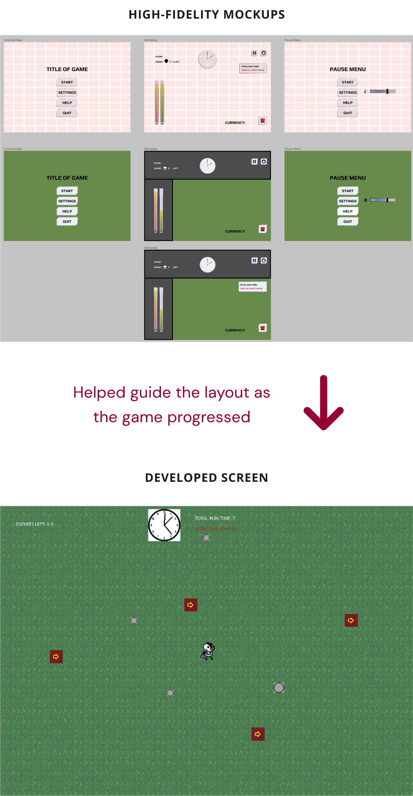

The Challenge
Advocating for User-Centric Design/development can be challenging. Learning how to work with tight deadlines, reaching game product goals, while keeping positive synergy within a team.
Overview
Timeline & Team
- April 23-26, 2023
- 12 Days
- Originally a 6 person team, then became a 4 person team
My Responsibilities
- Flowchart
- Wireframing & Rapid Prototyping
- High-Fidelity Mockups
- UI Style Guide: Mood board, color palette, icons
Opportunities
- Thriving as the Lead UI/UX Designer on a Dynamic Team
- Strategically Prioritizing Research, User Experience, and Seamless Transition to UI and Asset Production
Rapid conceptualization
Flowchart to paper wireframes to Low-Fidelity Wireframes

1st Challenge: Acknowledging Unrealistic Expectations
The team was overwhelmed with the amount of screens I suggested.
I cut the screens down to the essential screens that the developer can realistically build with the given time frame

2nd Challenge: Asked to Fill in an Unexpected Role
I was then asked to create UI assets
Opportunities arised:
I was prepared to do research and wireframing however I had to pivot to a more UI-focused role. The team started to participate more by adding their ideas. I realized that UI brings together the vision of the team. Improved cohesion of ideas surfaced more.

Success! The initial Style Guide was created
This initial style guide would help guide the screen UI, art, game design for the developer

More Small Victories
The creation of the Style Guide helped guide the creation of UI assets. Each step was iterated with the help of team feedback.

High-Fidelity UI Library

Putting all the Pieces Together
The UI Style Guide and UI Hi-Fi Library were implemented in the Mockups
Though my designs were followed exactly, the color scheme was no longer neon green and black, buttons were more stylized, and there was an intuitive flow from the menu screen to the Game Screen.
Takeaways
Not everything went as planned
and that’s okay
- It’s okay to admit if you don’t know something. Your team is there to help and support. Everyone is in the same boat!
- It’s okay to compromise. Be flexible; a lot is out of your control in Game Development like time constraints. Letting go of personal expectations.
- Keep track/document everything you contribute to a project. Reflect on process to learn what can improve on the next Game Jam/case study/job etc.